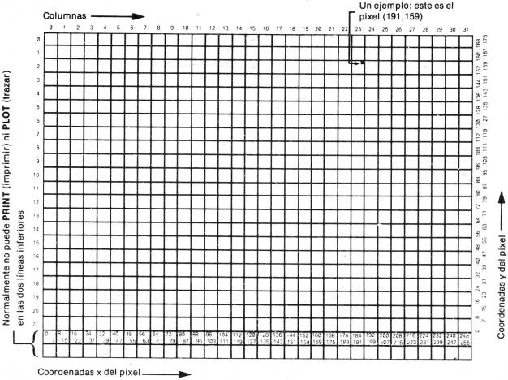

Manual de Basic Spectrum 48k. |
|
Capítulo 15
Más sobre PRINT e INPUTResumen
Ya ha visto PRINT utilizado con mucha frecuencia, por lo que tendrá una idea aproximada de cómo se emplea. Las expresiones cuyos valores se imprimen se denominan elementos PRINT y están separados por comas o punto y coma, llamados separadores PRINT. Un elemento PRINT puede ser también nada en absoluto, que es una forma de explicar lo que sucede cuando utilice dos comas en una fila. Hay dos clases más de elementos PRINT, que se emplean para decirle al ordenador, no que es lo que ha de imprimir sino en donde. Por ejemplo PRINT AT 11,16; "*" imprime una estrella en la parte central de la pantalla. AT línea, columna
desplaza la posición de impresión PRINT (o lugar en donde ha de imprimirse el elemento siguiente) a la línea y a la columna especificada. Las líneas están numeradas desde 0 (en la parte superior) a 21 y las columnas desde 0 (a la izquierda) a 31. 
TAB columna imprime suficientes espacios para desplazar la posición de impresión PRINT a la columna especificada. Se mantiene en la misma línea o, si ello implicara salto de línea, se desplazaría a la siguiente. Tenga en cuenta que el ordenador reduce el número de columna 'módulo 32' (divide por 32 y se lleva el resto); por ello, TAB 33 significa lo mismo que TAB 1. Como un ejemplo: PRINT TAB 30; 1; TAB 12; "Contenido"; AT 3, 1; "CAPITULO"; TAB 24; "página"
es como podría imprimir el encabezamiento de una página del contenido (o índice) en la página 1 de un libro. Pruebe la ejecución de este programa:
Este programa indica lo que se entiende por la reducción de módulo 32 de los números en TAB. Para un ejemplo más elegante, cambie el 8 en la línea 20 por un 6. Algunas pequeñas puntualizaciones:
Otra sentencia relacionada con PRINT es CLS. Esta última borra la pantalla entera, lo que también se realiza por CLEAR y RUN. Cuando la impresión llega a la parte inferior de la pantalla, comienza a desplazarse hacia arriba de forma semejante a como se realiza en una máquina de escribir. Puede verlo si teclea: CLS: FOR n = 1 TO 22: PRINT n: NEXT n
y luego: PRINT 99
unas cuantas veces. Cuando el ordenador está imprimiendo gran cantidad de información, lo hace cuidadosamente, cerciorándose de que nada se pierde por la parte superior de la pantalla hasta que usted haya tenido oportunidad de examinarlo adecuadamente. Puede constatarlo si teclea: CLS: FOR n = 1 TO 100: PRINT n: NEXT n
Cuando haya impreso una pantalla completa, se parará, escribiendo scroll? en la parte inferior de la pantalla. Ahora puede inspeccionar los primeros 22 números a su comodidad. Cuando haya acabado su examen, pulse y (por "yes") y el ordenador le proporcionará otra pantalla llena de números. Realmente, cualquier tecla hará que el ordenador siga el proceso con la excepción de las teclas n (por "no"), STOP (SYMBOL SHIFT y a) o SPACE (la tecla BREAK). Estas teclas harán que el ordenador detenga la ejecución del programa con un informe D BREAK CONT repeats. La sentencia INPUT puede hacer mucho más de lo que le hemos dicho hasta ahora. Ya ha visto sentencias INPUT como INPUT "Qué edad tienes?", edad
en la que el ordenador imprime la frase Qué edad tienes? en la parte inferior de la pantalla y luego, tiene que teclear su edad. De hecho, una sentencia INPUT está constituida por elementos y separadores en la misma forma exactamente que lo está una sentencia PRINT, por ello qué edad tienes? y edad son ambos elementos de información de INPUT. Estos últimos suelen ser los mismos que los de PRINT, pero hay algunas diferencias muy importantes. En primer lugar, un elemento adicional de INPUT es la variable cuyo valor ha de introducir por teclado (edad en nuestro anterior ejemplo). La regla es que si un elemento de INPUT comienza con una letra, debe ser una variable cuyo valor ha de introducirse. En segundo lugar, esto parecería significar que no puede imprimir los valores de variables como parte de un epígrafe; sin embargo, puede eludirlo poniendo paréntesis encerrando a la variable. Cualquier expresión que comience con una letra debe encerrarse entre paréntesis si ha de imprimirse como parte de un epígrafe. Cualquier clase de elemento de impresión PRINT que no sea afectado por estas reglas es también un elemento de introducción INPUT. Veamos un ejemplo que sirva de ilustración de lo que se está exponiendo: LET mi edad = INT (RND * 100): INPUT("Tengo"; mi edad; "."); "Qué edad tienes?", tu edad
mi edad está entre paréntesis, por lo que su valor consigue ser impreso. Tu edad no está entre paréntesis, por lo que ha de introducir por el teclado su valor. Todo lo que una sentencia INPUT escribe sale en la parte inferior de la pantalla, que actúa con cierta independencia de la mitad superior. En particular, sus líneas están numeradas con respecto a la línea superior de la mitad inferior, aun cuando esta última se haya desplazado hacia arriba de la pantalla de televisión real (lo que sucede si introduce grandes cantidades de datos por INPUT). Para ver cómo opera AT en las sentencias INPUT, trate de ejecutar lo siguiente:
(basta pulsar ENTER cada vez que se detenga). Cuando Esta es la línea 2 es objeto de impresión, la parte inferior de la pantalla se desplaza hacia arriba para dejar espacio para ella; pero la numeración se desplaza también hacia arriba, de modo que las líneas de texto mantienen sus mismos números. Ahora, pruebe el programa siguiente:
A medida que la parte inferior de la pantalla se va desplazando cada vez más hacia arriba, la parte superior no se altera hasta que la parte inferior "amenace" con escribir en la misma línea que la posición de impresión PRINT. Entonces, la parte superior comienza a desaparecer por arriba de la pantalla (acción de "scrolling") para evitar que dicha amenaza se "haga realidad". Otro perfeccionamiento de la sentencia INPUT que no hemos visto todavía se llama introducción LINE y es una forma distinta de introducir variables de entrada. Si escribe LINE antes del nombre de una variable de entrada que ha de introducirse, como en INPUT LINE a$
entonces, el ordenador no le proporcionará las comillas de cadena que es lo que suele hacer para una variable de cadena, aunque hará como si estuvieran. Por consiguiente, si teclea cat
como dato de INPUT, a a$ se le dará el valor cat. Puesto que las comillas de cadena no aparecen en la cadena, usted no puede suprimirlas ni introducirlas por teclado en una clase distinta de expresión de cadena para los datos de INPUT. Recuerde que no puede utilizar LINE para variables numéricas. Los caracteres de control CHR$ 22 y CHR$ 23 tienen efectos bastante similares a AT y TAB. Son bastante singulares como caracteres de control porque siempre que se envían para ser impresos en la pantalla de televisión, deben ir seguidos por dos caracteres más que no tienen su efecto habitual: se tratan como números (sus códigos) para especificar la línea y la columna (por AT) o la posición de tabulación (por TAB). Casi siempre encontrará más fácil utilizar AT y TAB, en la forma habitual, en lugar de los caracteres de control, pero podrían ser de utilidad en algunas circunstancias. El carácter de control AT es CHR$ 22. El primer carácter después del mismo especifica el número de línea y el segundo el número de columna, de modo que PRINT CHR$ 22 + CHR$ 1 + CHR$ c;
tiene exactamente el mismo efecto que PRINT AT 1, c;
Esto es así aun cuando CHR$ 1 o CHR$ c tuvieran normalmente un significado diferente (por ejemplo, si c = 13); el carácter CHR$ 22 antes de ellos anula ese significado. El carácter de control de TAB es CHR$ 23 y los dos caracteres después del mismo se utilizan para dar un número entre 0 y 65535 que especifica el número que hubiera tenido en un elemento de información de TAB: PRINT CHR$ 23 + CHR$ a + CHR$ b;
tiene el mismo efecto que PRINT TAB a + 256 * b;
Puede emplear POKE para detener el ordenador, que le hará la pregunta scroll?, escribiendo POKE 23692,255
periódicamente. Después de esto, se desplazará hacia arriba en la pantalla 255 veces antes de pararse con la pregunta scroll? Como un ejemplo, pruebe:
y vigile cualquier zumbido (!) de la pantalla, por el movimiento con gran rapidez. Ejercicios
|
Manual de Basic Spectrum 48k. |